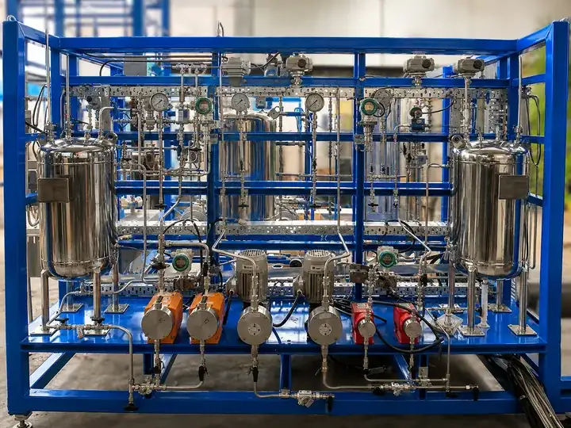

Validación del proceso
Evaluar el comportamiento del proceso bajo condiciones de operación definidas.
Del desarrollo en laboratorio a la validación de procesos mediante ingeniería
Instron Technologies diseña sistemas integrados a escala piloto y de demostración para organizaciones de investigación, desarrolladores de tecnología y equipos industriales de I+D, combinando sistemas de proceso, instrumentación, automatización y recopilación de datos para ensayos controlados, evaluación tecnológica y decisiones fundamentadas de escalamiento.

De la ciencia a equipos operables
El diseño de un sistema a escala piloto se basa en lo que el programa de pruebas debe demostrar.
Evaluar el comportamiento del proceso bajo condiciones de operación definidas.
Adaptarse a cambios previstos en parámetros de operación, secuencias y condiciones de prueba.
Recopilar la información de proceso necesaria para evaluar el desempeño del sistema.
Registrar observaciones experimentales, tendencias de proceso y resultados de operación.
Utilizar los hallazgos de los ensayos a escala piloto para orientar la siguiente etapa de ingeniería y demostración.
Sistemas a escala piloto para centros de investigación de refinación de petróleo y gas: purificación de gases, captura de CO₂ con aminas y separación de hidrógeno por membranas hasta 50 barg, y un montaje de reactor de milicanales.
Leer el caso de estudio
Preparación para el escalamiento
Para tecnologías que necesitan operar más allá de la escala de laboratorio en condiciones más representativas de proceso, servicios auxiliares, control o sitio antes de una inversión mayor o una decisión de transferencia. Un sistema de demostración evalúa:
Comportamiento del proceso durante campañas de operación más largas o repetidas.
Interacción entre equipos de proceso, controles, servicios auxiliares y sistemas de apoyo.
Arranque, paro, monitoreo, mantenimiento y procedimientos de operación.
Información técnica necesaria para evaluar la siguiente etapa de escalamiento o implementación.
¿Las pruebas piloto garantizan el escalamiento?
No. Una planta piloto puede mejorar la base de ingeniería al generar evidencia de operación y revelar comportamientos que dependen de la escala. El escalamiento aún requiere criterio de ingeniería y un análisis específico del proyecto.
Una base de ingeniería integrada
Cada área se diseña para el programa de pruebas, no para un servicio de producción fijo.
Desarrollar la configuración experimental del proceso, el servicio de los equipos, los límites de operación y las interfaces del sistema.
Seleccionar e integrar las mediciones necesarias para la evaluación experimental, el control de procesos y los datos de operación.
Configurar secuencias de operación, lazos de control, puntos de ajuste, alarmas e interfaces de operador para el programa de pruebas.
Capturar parámetros experimentales seleccionados, tendencias de operación y reportes para la evaluación técnica.
Entregables para la toma de decisiones
El paquete de ingeniería se define según el programa de pruebas y puede incluir:
Aceptación y puesta en marcha
Las pruebas de aceptación en fábrica son más útiles cuando se vinculan con las bases de operación y control acordadas, en lugar de tratarse como una inspección genérica.
La aceptación en sitio y la puesta en marcha abordan después las interfaces que no pueden comprobarse por completo antes de la instalación: servicios auxiliares, interconexiones, equipos del sitio, comportamiento real del proceso, sintonización, interacción con operadores y requerimientos de entrega final.
Lecturas adicionales
Trabajos seleccionados
No divulgamos los nombres de nuestros clientes. Hay referencias disponibles a solicitud.
Crezcamos juntos
Comparta la aplicación de su tecnología, la etapa actual de desarrollo, los objetivos experimentales y la información de proceso disponible, y nuestro equipo analizará los requerimientos y el alcance de ingeniería de su sistema a escala piloto o de demostración.
